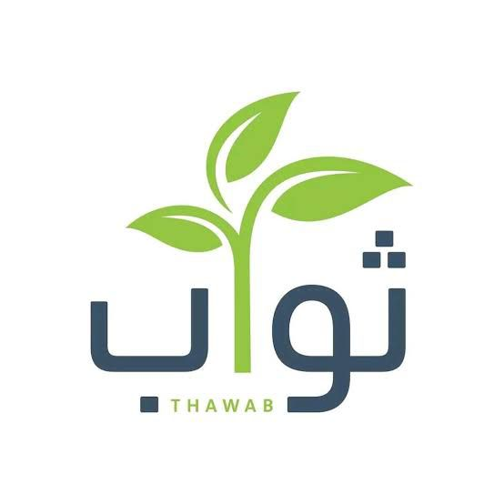

jubail Orphan Association
Providing comprehensive care for orphans and their families, developing their skills and empowering their abilities through six key pathways: financial, livelihood, health, education, psychological and social support, in collaboration with government agencies and charitable organizations
donate now

Al-Orman Association
Al-Orman Association supports orphans with shelter, healthcare, and education, inviting philanthropic contributions
donate now

Thawab Charity Foundation
Donate now and be a pillar of support for an orphaned child, helping build a brighter future. The Orphan Sponsorship Project, managed by Thawab Development Foundation, aims to provide comprehensive care and ensure a dignified life for orphaned children
donate now
Orphan Care Union
A coalition of non-governmental humanitarian organizations dedicated to providing comprehensive care and support to orphans and their families
donate now

Sponsoring
Sponsoring an orphan is a gesture of hope, a warm embrace, and a gentle touch on the heads of these children.
It alleviates their hardship, providing financial and social security, food, medicine, clothing, education, and psychological support.
his sponsorship eases their suffering, comforting them and mitigating the bitterness of loss.
Sponsoring encompasses
- Financial Support: Providing basic necessities like housing, food, clothing, and healthcare.
- Education: Offering educational opportunities and training for a brighter future.
- Personal Care: Emotional and psychological support for holistic growth.
- Emotional Support: Helping orphans cope with their emotions and overcome challenges.
- Stability: A safe and stable environment for healthy development.
- Long-term Commitment: Sustainable support for independence.
Comprehensive care for orphans
Comprehensive orphan care involves charitable organizations providing holistic support,encompassing financial, emotional, physical and educational a spects
This care enhances quality of life, fosters independence, and promotes self-sufficiency
Development Project Models
- Clean water access initiatives.
- Housing rehabilitation for female-headed households.
- Quality education programs.
- Psychological and social support services.
- University scholarships.
- Sustainable livelihood support for female-headed households.
Purpose
Comprehensive orphan care aims to empower orphans, ensuring a brighter future and breaking cycles of poverty.
The impact of orphan sponsorship on community stability
The impact of orphan sponsorship on community stability is profound
By providing support, orphan sponsorship ensures a cohesive society, free from psychological and social problems.
Sponsored orphans grow into responsible, empathetic, and law-abiding citizens, away from crime and deviance.
This noble act fosters a culture of love, kindness, and compassion, encouraging sponsored children to reciprocate kindness and sponsor others in need, ultimately building a harmonious and effective community